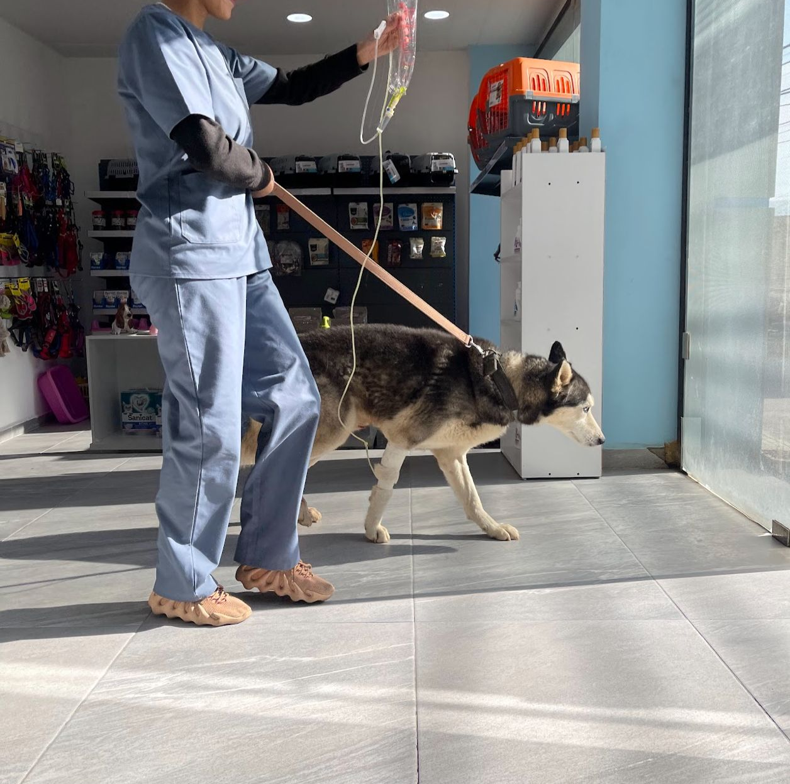

At our veterinary clinic, we're driven by a passion for animals and a commitment to exceptional care. With a team of dedicated professionals, we provide a welcoming, nurturing environment for pets and their owners. From preventive medicine to advanced treatments, our clinic upholds the highest standards, ensuring the health, comfort, and happiness of every furry patient. We believe in the power of compassion, expertise, and personalized attention, creating a trusted home for all your pet care needs.
Products
Explore top-tier pet products for their health and happiness. From premium nutrition to essential care items, find everything your pet needs to thrive in one place. Quality guaranteed for their well-being. Learn more
Services
Expert care for every step of your pet's journey. From routine check-ups to specialized treatments, our comprehensive services prioritize your pet's health. Trust us to provide exceptional veterinary care and support for their lifelong well-being. Learn more
Find Us
Locate and connect with our veterinary care center.
Reviews
Stella Thompson: I want to take a moment to express my deep appreciation for Dr. Nahli, an exceptional veterinarian who embodies the essence of compassion, respect, and devotion to both animals and their guardians. Dr. Nahli's genuine commitment and empathy truly touched our hearts as he tirelessly worked to save our beloved dog. Despite the unfortunate outcome, we are profoundly grateful for his unwavering patience, dedication, and unwavering optimism throughout the process. His genuine care and efforts have left a lasting impact on us, and we highly recommend Dr. Nahli for his remarkable approach to veterinary care
Ava Chen: This clinic is highly recommended. Dr. Ahmad and all the staff are highly professional in the business and the best in all Lebanon. They treat pets well and do their jobs responsibly and humanly.
Lucas Martinez: Dr. Ahmad and his staff are highly professional and skilled. The clinic is equipped with top technology and the shop has a wide variety of items and brands. Highly recommended if you want to pamper your pet!